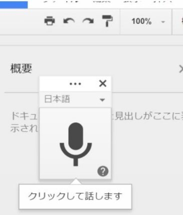

| iphone音声入力で、あなたもkindle作家に！！ | |
| TASコンサルタンツ | |
| (2017) | |
iPhone音声入力であなたも、
Kindle作家 に‼
この本では 初心者が、音声入力を使ってkindle本を作る方法 について書いてあります。
はじめまして。
TASコンサルタンツ チーフコンサルタントの新崎です。
この本は、はじめてkindle本を書きたい人を対象に書きました。
この本で３作目のkindle本になります。
この本は私にとって、はじめての試みをしています。
その試みとは、いつも手元にあるiPhoneの音声入力機能を使って文章を書いているのです。誰でも持っているiPhoneで。
いま、この本を含め、４冊同時に書き進めています。
このようなことができているのは音声入力機能を使ってるからです。
Wordやテキストアプリでは、きっとこんなことはできなかったかもしれません。
素晴らしい時代になったと思います。
私は本質的に先送りの癖を持っています。
気分が乗らない、資料が足りない、疲れているなどなど。
さまざまな理由をみつけて、やるべきことを先送りしてしまいます。
キーボードからの入力となると言い訳が山のように、いくつもでてきて先送りし、いつまでたっても文章を書き始めることができません。
ところが、iPhoneの音声入力だと気軽に始めることができるんですね。
なぜなら、iPhoneは常時携帯していて、いつでも、どこでも、即、音声で入力することができるからです。
座っていたり、立っていたり、歩いていたりしていても、いつでも入力ができます。
夜、約１時間のウォーキング、これまでは音楽や英会話を聞きながらのウォーキングでした。
そのウォーキングが一変！！
いまでは大事なアイデア出しや、執筆の時間になっています。
スマートフォンを耳に当て、電話をしているような感覚で文章を書き起こしていきます。
時々、音声入力がストップしていることに気が付かなくて失敗することもありますが、、、
音声入力、私にとって、人生を変えたとも言える大きなツールとなりました。
なぜなら、先送りをする最大の理由が解消されてしまったからです。
ただ、この方法を知ってから困ったことが一つあります。
それは、この方法を知ってからスキマ時間が少なくなってしまったことです(^^)
もともとはスキマ時間に書ければいいか、くらいのスタートでした。
それが今ではメインになってしまったのですから。
この本の大部分は車の中で、海を見ながら書いています。
家、事務所の中にこもって書くより、いろいろな刺激があって、思いもよらない表現が出てきたりします。
空間が広がると、自分でも信じられないような言葉がでてきたりします。
この音声入力を活用して、あなたも本を書いてみてください。
あなた自身、自分にも本が書けると可能性を感じ、きっと楽しくなると思います。
これまでの人生とはまた違った、人生が創れると信じています。私がそうでしたから。
この本で使う必須のツールはgoogle ドキュメントと入力機器です。
具体的には次に掲げるツールです。
電子書籍を作るメインのツールが無料で使えるgoogle ドキュメントです。
Google ドキュメントは Microsoft のワードと同じような機能を持っています。
第１作目は google ドキュメントで作り word に変換し Amazon KDP にアップしました。
当初は google ドキュメントがそのままアップできることを知らず、余計な手間をかけてしまいました。
今回は google ドキュメントで作った原稿を、そのままAmazon KDPにアップしてみます。
googleドキュメントの場所
iPhone、ipadなどタブレットだとApp storeにあります。
無料でダウンロードできます。
ダウンロードすると次のように画面に表示されます。
iphpneの待ち受け画面です。
このドキュメントのアイコンをクリックすると、文章入力ができるようになります。
パソコンの場合、googleドキュメントは Google Chromeを起動して表示されるアプリ群の中にあります。
Google Chromeを開くと左上、右上に格子状のアイコンがあります。
アイコンをクリックしてください。
そのいずれにもGoogleドキュメントがあると思います。
格子状のアイコンをクリックして出てきたこのアイコン群の中の、矢印のアイコンが google ドキュメントです
Google ドキュメントは iPhone、windows、android いずれも無料で使えます。
googleドキュメント、iPhone、最低この２つのツールがあれば、この本で書いてあることはすぐに実行することができます。
他にパソコンかタブレットがあれば、文章の編集、校正が楽になります。
それではgoogleドキュメントを開いてみましょう。
Googleドキュメントのフォントとか、文字のサイズとかは、特に変更しなくても大丈夫ですが、私はA５サイズにして、余白をすべて「１」にしています。（この本の書式が余白１です。）自分自身が読者だったらそのほうが見やすいからです。
余白の変更は、ツールバーの「ファイル」をクリックして、最下部にある「ページ設定」を開きます。デフォルト設定での余白はすべて「０」になっています。
このままだと、編集の際に打ち出したとき、とても見づらいです。
好みはあるかもしれませんが、余白をすべて「１」にすると読みやすくなります。
次回からの使い勝手を考えて、変更後をデフォルトに設定しました。
iPhoneで入力するには、Google ドキュメントの右下にある鉛筆マークをクリックし編集モードにします。
編集モードにすると、次のように文字入力ができるようになります。
今回は音声入力ですので、その編集モードにあるマイクアイコンをクリックして音声入力を始めます。
このマイクアイコンをクリックします。
そうすると次のように変わります。
これで、音声入力の準備が整ったことになります。
この状態で音声入力をすると、しっかりと文章に変換してくれます。
iPhoneで、サクサクと本を入力することができます。
気をつけてほしいのは、途中で音声入力が途切れます。２０～３０秒くらい経過すると、音声入力がキャンセルされた状態になるようです。
一生懸命に音声入力していたのに、確認したら文章化されていたのは最初の２～３行だけ、ショックです。頻繁に確認することをおすすめします。
もう一度繰り返そうにも、同じ発想、アイデアはでてきません。
気をつけて、いつでも音声入力がONになっているかチェックする癖をつけましょう。
パソコンで音声入力
パソコンの場合は、Googleドキュメントのツールバーからツールをクリックし、開いてください。
ツールを開くと、音声入力のアイコンがあります。
その音声入力をクリックすると、次のようなマイクのアイコンが立ち上がります。

マイクをクリックします。
マイクのアイコンをクリックすると音声入力ができるようになります。
PCに備わっているマイクそのままでも十分に入力できるのですが、マイクか、ヘッドセットがあればもっと楽に入力ができ、認識してくれる確率も高くなります。
マイク、ヘッドセットは安いもので構いませんので。
私は声に癖があり、かなり「こもり気味」で聞きとりづらいと言われます。
そんな私の声でもしっかりと認識してくれます。
女性や、こもらない声ならヘッドセットもいりません。
そのままで音声入力ができます。
音声入力で私がおもに使っているのは IPhone についているイヤホンです。
IPhone についてるイヤホンは性能が極めてよく、変換効率がとてもよく、満足できる様な文章に変換してくれます。
このiPhoneについているイヤホンで、パソコン、タブレット、スマホいずれにも使えます。
文章の入力方法にはキーボード入力、フリック入力などがあります。
入力スピードは文章作成効率に大きな影響を与えます。
ブラインドタッチで入力できるなら、キーボード入力でも早く入力できますね？
また、フリック入力も慣れてくると、かなりのスピードで入力することができます。でも、いずれも指の動作を伴います。
これに対し、音声入力は指の動作をほぼ使いません。
iPhoneがあれば、どこでも、いつでも入力ができます。
初期の文章作成は音声入力で行い、編集はキーボード、フリック入力などで行えば編集効率は格段にアップします。
iPhone音声入力は極めて高い精度で文字変換をしてくれます。
入力スキル、つまりブラインドタッチや、フリック入力のスキルが多少弱くても十分に入力ができます。ぜひ活用してください。
以上、本を書くにあたって必要なツールを紹介しました。
このツールは前もって準備してください。
次はgoogleドキュメントの機能について説明していきます。
google ドキュメントには、目的別文書テンプレート、画像編集、辞書、データ探索など、幾つもの便利な機能が備わっています。
これらの機能のうち、いくつかを使いこなせばもっと楽に文章の作成ができると思います。
私もこれらの機能のうちのいくつかしか使えていませんが、それでも十分に目的を達成できています。
ここでは私が普段使っていて便利だと思う機能を３つ紹介します。
これ以外の機能もチャンスがあれば使ってみたいと思います。
ぜひ、あなたもあなたなりの使い方を探してください。
iPhone の場合、google ドキュメントだけじゃなくメモ、 メールや LINE の入力にも音声入力が使えます。
初めての kindle 本はテキストファイルで文章を作り、ワードにコピー＆ペーストして作成しました。
音声入力を知らなかったため、すべてキーボードでカタコトと手入力しました。
すごい時間を使ったことを覚えてます。
このときに、もっと効率のいい文章作成方法はないかと考え始めました。
2冊目の本は ワードに直接入力し完成させました。
googleドキュメントを使い始めたのは、iPhone、ipad、パソコンなど、どの機器からでも入力ができる利便性を知ったからです。
当初は、ワードの簡易版ととらえていましたから、機能についてろくに調べもせずワード感覚で使っていました。
メニューを開いても、ツールの中にある「音声入力」という機能に気がつくこともなく、従来の延長でそのままキーボードからの入力で完成させました。
音声入力に気がついたのは偶然です。
iPhoneのツールSIRIを使っているときでした。
もしかして、これって文章入力に使えるのでは？と、「メモ」に入力をする際にマイクアイコンを押して音声入力を使ったところ、かなりの精度で変換してくれました。
これならいけるとgoogleドキュメントで使い始めました。
初めは手探りでしたか、慣れるにしたがって文章の作成効率が高まってきました。
これまで Amivoice やドラゴンスピーチなど、音声入力ツールを購入し使ったことがあります。
しかしこの音声入力ソフトは、私の声を認識するのにとても時間かかるんですね。
なにせ、オーダーメイドみたいなものですから。
結局、私の声のクセを認識させるのに手間がかかりすぎて挫折、しばらく音声入力から遠ざかってました。
私はブラインドタッチができます。ですから入力に何の不自由も感じません。
しかしiPhoneや googleドキュメントの音声認識力は、私の期待をはるかに超える高性能でした。
あらかじめ私の声を登録する必要もありません。
とんでもない変換をすることも、そう多くありません。
この機能を使い始めてから文章の作成がとても楽になりました。
音声入力はとても便利な機能です。
ただ、それで文章の作成がとても早くなるかといえば、そうではありません。
編集作業に、より時間がかかります。
それは、長文の変換はかなりの精度で変換してくれますが、短文の変換にはまだ少し難があるように感じるからです。
それでも、iPhone で音声入力し、パソコンで確認、編集することが簡単に出来ています。これはすごいことですね。
将来的にはもっと効率のいい機能になると思います。
今から時代の道具を使い慣れておくことが大切です。
Google ドキュメントの最も素晴らしい機能の一つにクラウド上へのオートセーブ機能があります
オートセーブ機能とは、いちいち手動で保存作業をしなくても、自動で保存してくれる機能です。
入力作業をしていて突然電源が落ちてデータが消えた！！
セーブを忘れてシャットダウンしてしまった！！
なんてことがあったらショックです。
そんなことがないように google ドキュメントにはしっかりとオートセーブ機能が備わっています 。
ですから、編集のたびに保存をする必要はありません。
クラウド上に保存されているため、ネットに繋がってる環境なら、どの機種からでも呼び出し編集することができます。
つまり、iPhone やタブレット、パソコンなど機器を気にすることなく、同じ文章を編集できます。
目次作成
googleドキュメントはリンクを張った目次を簡単に作ることができます。
もちろんWordなどにもこの自動で目次を作成する機能はあります。
googleドキュメントでは、スタイルで簡単に設定することができます。
しかも画面で見ながらできます。
画面を見ながら、タイトルの設定、見出し、小見出しの設定など簡単に出来ます。
通常の入力はNormal textで入力します。
入力時にこの設定をして、ツールバーの挿入→目次で、目次を作ることが出来ます。
入力機器
iPhone
私は外では iPhone ７、事務所ではパソコン、タブレットを入力、編集などに使っています。
iPhone は付属しているイヤホンで入力することがお勧めです。
IPhone 以外のスマートフォン機種を使ったことがありません。
ですからIPhone 以外の機種は、詳しくありません。
もしiPhone 以外の機種をお使いでしたら、音声入力と検索し使い方を調べてみてください。他の機種でもきっと使えるようになっていると思います。
ちなみに、androidタブレットでは音声入力が出来ました。
これから、パソコン、タブレットのことも書いていきますが、iPhoneだけでも十分にkindle本は作成することができます。
パソコンはノートパソコン、デスクトップいずれでも構いません
ブラウザは「Google Chrome」をつかいます。
Google Chrome のアプリの中に google ドキュメントがあります。
パソコンは入力、編集いずれも効率よく作業が行えます。
事務所にいるときは、ほぼノートパソコンで音声入力、編集をしています
余談ですが ipad の google ドキュメントを開いたままにして、パソコンで作業をするとドキュメント内容がタイムリーに同期されます。
Ipad の画面を見ていると、おぉ～と感動すら覚えます。
パソコンがなければ、タブレットでも十分です。
私が普段使っているタブレットは ipadmini３と sony xperia z4 です。
両者の使い勝手に遜色はありません。よく使ってるのは ipad です。
xperia z 4はGoogle ドキュメントの右下にあるキーボードアイコンをクリックし、google 音声入力を選択すればマイクのマークが出てきます。
これで音声入力ができるようになります。
それ以外のタブレットでも同じように音声入力ができるはずです。
ipadはiPhoneと同じような操作で使えます。
ですから、抵抗なく使えます。
文章を書く時に、多くの方が悩むのが「何を書けばいいのかわからない」です。
最初は誰でも悩みます。
そんな時は ぜひアマゾンのkindle本を検索してみましょう。
kindle本を覗いてみましょう。様々なジャンルがあります。
kindleアプリをダウンロードすれば、いろいろなジャンルの本のサンプルが無料でダウンロードできます。
kindle アプリはiPhone、タブレット、またはPCにインストールできます。
このkindleアプリがあればkindle本を読むことができます。
気になる本は、サンプルをダウンロードし、はじめの数ページを読むことができます。ぜひ導入してみてください。
無料の本も数多く出版されています。
電子本のサンプルの取り方、電子本の買い方、決済の方法、など参考になることがいっぱいです。
どのような本が読みやすいか、文字の大きさは、余白はなど、客目線でチェックすることが出来ます。
表紙やまえがき、目次などを見て、どのような構成になっているのか、どのような書き方なのかを観察してみましょう。
そんなに難しいことは書いてありません。
気に入った本は購入してみましょう。価格も紙の本に比べてかなり安く設定されています。
私も書き始める前に、およそ半年間、かなりの kindle 本のサンプルのダウンロードを繰り返していました。そして購入した本は１３０冊を超えます。
どのような本が売れているのか、文体は、など書き方を徹底して観察してみました。
気がついたのは、文学書を除いて、美しい文章とか、凝った文章ではなかったことです。
わかりやすい言葉で、簡潔に書かれてる本が多かったと感じました。
そして、意外に話し言葉で書かれている本が多かったことです。
それに気がついたときに、とても気が楽に なりました。
話すような感じで、話し言葉で、本を書いても何も失礼ではないと。
もちろん極端に失礼な書き方はいけませんが。
そうでなければ、どんどん音声入力で話しかけていけばいいです。
訂正は後でいくらでもできます。
音声入力をしてるときには、iPhoneに向かって、ただ話しかけているだけです。
編集もしないですし、改行もしませんし、終止符も打ちません。
誤字脱字もお構いなしで、話し言葉そのままです。
もちろん、意味不明の誤変換の場合は、もう一度音声入力し直します。
あとで思い出せなくて、手が止まると困りますから。
それでもまだ書けないという方、次のようなことをしていませんか？
あなたは文章を書くときに、どんなことから始めますか？
たとえば、肩こりについて書くとき、どういうステップで書きますか？
すぐにパソコンを開いて、 word 立ち上げ、肩こりとは？と、始めていませんか？
肩こりの症状とか、肩こりの原因などから、書き始めていませんか？
そして、すぐに行き詰まってしまい、手が止まってしまう。と、いうことはありませんか？
これは書き進めることができない理由の一つらしいです。
私もはじめは、このことに気が付きませんでした。
やはり本を書くのは難しいな？と悩んでいました。
でも、書けないのはスキルとか、やる気とかは関係ないようです。
書けない最大の理由は準備をしてないからです。
準備をせず、いきなりキーボードに向かってタイピングを始める。
すると、最初の数行ですぐに手が止まります。
書くことが思い浮かばないんですね。
何事も、準備が大切です。これは文章を書くことに関して言えます。
では、文章を書く前にどんな準備をすれば良いのでしょうか？
それは、
１・何について書くのか？
２・誰に向かって書くのか？
３・読んだ人がどうなって欲しいのか？
この3つのことについて準備をすることから始めれば良いのです。
文章を書くには、いくつかのステップがあると思います。
たとえば、この本は、キンドル本を書く人のための本です。
読んでほしい人は、iPhoneを使っている人で、キーボード入力、フリック入力が不得手だけど文章を書きたい人です。
目的は、「音声入力でkindle本、文章を書きあげるようになる」ことです。
読者が本を買う目的は何でしょうか？
悩みを解消したい、今抱えている問題を解決したい、など、欲求を満たすことが目的になっていると思います。
それならその欲求を満たす、つまり、悩みを解消する、問題を解決する本、文章を書けば良いと思いませんか？
しかし、誰しも本を書く、また文章を書くのは抵抗感があります。
本なんてあまり読まないし、ましてや書いたことがないと。
でも、そんな心配は不要です。
私はいまでも、そう文章が上手い方ではありません。
これまでの仕事も、数字が中心で文章なんて二の次でした。
それでもこの本で3冊目です。
他に、この本も含め4冊進行中です。
こんなことができるようになったのも音声入力のおかげです。
「文章は苦手だけど、独り言なら出来る」
これは、誰でも同じと思います。
実際、私自身独り言がとてもうまくなりました。
恥ずかしさもなくなりました。
最初は売れなくてもいいから、まず1冊書き上げたいというのでしたら、あなたの好きなことを書くことからはじめたらいい、と思います。
私も最初の一冊は小説でした。登場人物も兄と妹のたった二人。
驚いたことに、この本がかなり読まれていたのです。
（アダルトで登録したこともありますが、、、）
本を書くことに慣れてきたら、本格的に稼ぐってことを目的にしてもいいと思います。
本を書くのは基本的に疑問と答えの繰り返しです。
どう書いていいのかわからないのなら言葉にしてみればいいです。
目の前にいる誰かに質問をしてみましょう。
話しかけるように言葉を発していけばいい。
音声入力、最初は支離滅裂で本になってなくても構いません。
練習だと思ってどんどん iPhone に音声を入力してください。
面白いもので一旦入力が始まると次から、次から言葉が出てきます。
大切なのはそれですね。
パソコンに入力しようとする、または紙に書こうとすると手が止まってしまいますが音声入力だとそんなことありません。
ある対象になる人を決めて、書きたい事について話しかけていくことが大事なことなんですね。
その対象となる人と会話をするように、何でも良いから、どんどん、どんどん話しかけてみるんです。
それがすべて文字となって表現されます。
そのうち、いらない部分とか、必要な部分が分かります。
いらない部分をあとで削除すればいいだけの話ですですから。
文章を作成するときに大事な事が一つあります。
それは音声入力のときに、音声入力以外のことをしないことです。
私たちは誤変換や句読点など、音声入力の途中で改行とか編集などを始めてしまうことをしがちです。
最後までしゃべり切ってしまう、ということを繰り返してください。
音声入力でうまく変換が出来ない時には、ヘッドセット（高価なものでなくて構いません）で入力するとうまくいく場合があります。
私はもともと声がこもりがちです。ですから音声入力のときかなり認識効率が悪く、認識してくれませんでした。
ところが、ヘッドセット使ってみると結構うまく認識してくれました。
最初から使ってみたほうが良いかもしれません。
音声入力に慣れてきたら本格的に文章を書きましょう。
最初にあなたが一番好きなことを書いてみましょう 。
好きなことならいくらでも話すことができると思います。
本を書こうと、大上段に構えるから書けなくなってしまいます。
美しい言葉で書きたい、正しい文法で書きたい、正しい日本語で書きたい、素晴らしいことですし、目指すことは悪くありません。
でも、最初はもっと気楽に行きましょう。
慣れてきたら、美しい言葉、正しい文法、正しい日本語で話したい、そう考えましょう。
そうすれば、前に進めます。
次ページに一つの考え方を書いています。
そこそこの本でもまず１冊、KDPにアップしてみることです。
悩んでいても何も解決しません。
まず行動してみれば解決策はいくらでも見つかります。
私の大好きな言葉は「なら、どうする」です。
これはサラリーマンを辞めてフリーランスになった最初の1年非常に厳しい状況でした。
お客さんが1件しかなく、収入も生活できるレベルではありません。
本当に月にいくらもないような状況でした。
その時にいつも考えていたのが「なら、どうする」です。
この言葉のおかげで不可能という言葉を使わないようになりました。
不可能という状況はそうあるものではありません。
始める前に少しだけ怖気づいて、不可能と考えてしまっているのです。
つまり自分自身が決めてるんですね。
私たちはその逆もできると思うんです。
不可能ではなく出来ると。
なら、どうしようか？って考えることもできます。
本を作って、「星1つであろうが、気にしない」こと。
そんな人、批判的な人はどこにもいます。
他人の批判は無視です。
この本はその人のために書いたのではない、と自分自身で信じればいいだけです。
あなたの本に「星」をつけてないけど、役に立っている人が必ずいます。見えていないだけです。
それでも書くことが思い浮かばないというのなら、
あなたがこれからやりたいことを書きましょう
あなたが、これからやってみたいことを書く
たとえば、旅行を計画しているのなら、計画から準備、出発そして現地の状況など、あなたなりの言葉で実況中継するように書いていったら良いと思います。
あれこれ考えすぎて書けないより、今やりたいこと、やっていることを書いていけばいいでしょう。
いずれにしても、完璧ってことはありませんから。
編集は後でいくらでもできます。
ですから気にせず、どんどんiPhoneに話しかけていきましょう。
kindle本を検索していると評価が目につきます。
★★★★☆マークです。
私の最初の本は☆３つでした。
しかし、そのことには、まったく反応しませんでした。
なぜなら、評価は私ではコントロールできないからです。
自分自身でコントロールできないことに一喜一憂することなんて、まったく無意味です。
やる気を失うだけです。
★ひとつなら、おぉ、読んでくれた人がいる！！と喜ぶべきです。
次は「読み手を考える」です。
読み手を思い浮かべましょう。
文章を書くときは書く題材が決まったら、ある一人の人を思い浮かべます。目の前に。
そして、その人と会話をします。その人の悩みを聞いてみましょう。
その人は２０代後半で結婚している。
もうしばらくしたら子供が生まれる。
でも、収入が少なくて困っている。
お金が必要だ。
その悩みをその人と一緒に考えながら話をします。
その人から色々な質問が来ます。
どうしたらお金が稼げるのだろう？
もっとバイト掛け持ちしようかな。
でも、今でも力いっぱい働いているし、嫁さんとの時間も取れないし。
家で、できる仕事ないかな、何か？
会社でもパソコン使っているし、パソコンを使ってできる仕事とか。
私も、あなたみたいに本が書いてみたい。どうだろう？
どんな本書きたいの？
どんな本を書きたいのだろう。
と云うように、対話を繰り返していきます。
もちろんこのまま本になるわけではありません。
iPhoneに音声メモを残すことで、本に生かせます。
iPhoneのメモを中心にして、「文章を書くための地図」をつくってみましょう。
その「地図」に基づいて、google やyahooを検索し情報を集めます。
検索した結果から、あなたの本に活かせる項目を googleドキュメントを立ち上げた iPhoneに音声入力で読み上げていきます。
脈絡はまだ不完全ですが、文章量はどんどん増えていきます。
同じ項目について３～５項目くらいを入力しておくことができれば、あとで削除したり、書き加えたりすることが楽になります。
情報を集める手段として、もう一つおすすめがあります。
「google scholar」です。
google scholar（グーグル・スコーラー）では、学術的な文献を中心に信頼性の高い情報を得ることができます。
情報はPDF形式で表示されます。
ここも、必要な部分だけ音声入力で読み上げていきます。
ただ学術論文ですから、かなり固めの文章です。
わかり易い言葉に言い換えることが必要です。
文章が進まない３つの理由。
文章が進まない３つの理由。
いつまでも手を動かさない。
これでは１ページも前に進むことはありません。
本を書くための資料など準備不足です。
音声入力を始めたらわかりますが、あることについて音声入力をしていて、知識不足が明らかになります。
話していることが、同じことの繰り返しであったり、言葉を変えて言っているだけだったりします。
この編集しながらの文章作成はとても効率が悪くなり文章が進みません。
私たちは、話すことと、書くこと、どの能力が優れているかと言うと、圧倒的に話す能力の方が優れています。
文章は小学校、中学校の作文、感想文ぐらいですね。
しかし、その作文、感想文にしても具体的な書き方を教わるわけではありません。
つまり、本格的な書き方を教わったわけではありません。
そう考えると本を書くのに、音声入力のほうがキーボードより私たちにあっているように感じます。
もちろん編集作業にはキーボードは必要ですが。
私は工業高校を卒業し、大学は中退で、専攻はずっと工業系でした。
ですから、文章を書くのが得意な方ではありません。
それでも書きはじめることができました。
本を書くにはまず書き始めることが大切です。
多くの人はこの最初のステップでつまずきます。
ですから物理的に書くのではなく、話しかけて書いていく、最初のステップを小さくすることで心理的な抵抗を抑えることができます。
書きたいことがあれば iPhone に話しかけてください。
文章が表示されてきます。
もちろん完璧な変換ではありませんが、かなりの精度で表示されます。
最終的には推敲、編集 が必要ですがキーボードを使った入力作業から解放されます。
これだけでも心理的負担が、かなり減少します
iPhone があればすぐに始められます。
今日から始めましょう。
音声入力になれる
これはとても大切なことです。
私たちは普段キーボードでも字を入力していきます。
しかし、ブラインドタッチが出来ないとかなり非効率です。
でも、音声入力なら、ひたすらiPhoneに話しかけていくだけです。
これだけで文字が入力されていきます。
最初に音声入力をたときは感動でした。
もう一つ音声入力で特徴的な事があります。
文章は初めがとても大切です。でも多くの人がここで躓きます。
キーボードに向かいキーボードを叩かなければならないからです。
ところが音声入力なら、ただiPhoneに話しかけるだけで文章が表示されてきます。
つまり、文章を書く抵抗感がかなり軽減されます。
ただ、文章を書く習慣がまだありません。ですから毎日１行でもいいから文章を書くことから始めましょう。その繰り返しが習慣になります
体調が悪い、気がのらない、どんなに書きたくない時でも、1行を書く。
それを徹底して行動をしてみてください。
気分が乗ろうが乗るまいが、とにかく書く。
この積み重ねが大切です。
体調を書けないことの言い訳けにしないこと。
気分のせいにしないようになります。
あなたも素晴らしい作品が創れるようになると思います。きっと。
繰り返しになりますが、最初の本はなんでもいいと思います。
あなたが好きなこと、あなたがこれからしたいことなど。
本を書く訓練と思って書いていけばいいと思います。
何を書けば良いのかわからないと言って、一向に手を付けないより遥かにいいです。
そのうち書くべきこと、書きたいことがわかるようになります。
文章書くときに気をつけてほしいことが一つあります。
「読み手」を明確にすることです。
文章が読まれるのは、読み手の持つ悩みとか、欲求とかそういう読み手が抱えてる問題を解決するために本、文章を読みます。
それが無いただの文章だと誰も読む気になりませんし、読むことはありません。
読み手は誰なのか？、常に振り返ってく浅い。
文章を書くときの要領ですが、思いついたらすぐに iPhone に話しかけるようにしましょう。
この繰り返しが大きな塊となって本になります。
Kindle本を書く事はそう難しいことではありません。
意外と簡単に書けます。
しかし、簡単に書けるから、簡単に売れる、読んでもらえる、と言うことではありません。
アマゾンで売れるためにはニーズがある、ことが必要です。
ニーズのない作品を作っても全く売れませんから。
友人がエッセイを書いてamazonKDPにアップしました。
ところがまったく読まれません。
私の本もニッチな分野、つたない文章ですから、そんなに読まれていませんが、、、でも、これも訓練と思ってせっせと書いています。
この本の目的は、音声入力という手段を使って本が書けるようになること。
材料がなければ何も作れない
本を書くには文章を作る（書く）必要がある
「作る」には材料が必要
何を書いていいのかわからないのは材料がないから
材料がないままに、書き始めるから手が止まる
はじめに 材料を集めましょう
材料はどうのように集めるのか？
書きたいことについてキーワードサーチをする
読者がどのようなキーワードで検索をしてるか調べる
これはとても大切なことです
読者が欲しいのは 読者自信を持つ悩みとか問題の解決です
キーワードそのための材料です
検索した項目をどのような順序で話すか考える
「話す」
音声入力を使って文章を書いていく
「見直す」
音声入力で文章入力が終わったら、紙に打ち出して読む
赤ペンを入れ、文章を訂正する
「見直す２」
伝わってほしいことと文章が一致しているか？
赤ペンを入れ、文章を訂正する
という一連の作業が必要
音声入力のための準備
ツール
googleドキュメント
amazon KDP（kindle Direct Publishing)への登録
アカウントを作る
KDP本棚に登録する
iPhoneで本を書くってどういうこと？
これまでキーボードで入力していた文章を、音声で入力すること
ブラインドタッチができなくても、音声入力で簡単に文章を作成できる
iPhoneやタブレット、パソコンには音声入力機能が備わっている
従来の音声認識ツールと違い音声認識のスピード、精度が格段にアップしている
IPhone は 今や誰でも持っているし、使っている
そのツールを使って音声入力をしていくと文章を作ることができる
この本はkindle本超初心者が、少しだけ楽に本を書けるように書きました。
誰しも、はじめてのことは尻込みします。
私もそうでした。
今でも、自分の書いた文章がどう評価されるのだろう？
なんて考えたらビビります。
そんな私の第1作がアダルトジャンルです。
この本が結構読まれていました。
これで自信を持ち、2作目、そして3作目と続いています。
評価に関しては、当初ほどの不安はありません。
評価の低かった人とは、そもそも価値観が異なったのだと思うようにしたのです。
それから、書くことに抵抗がなくなりました。
この本も読み放題で読めます。
もっといい本が書けるようになってから有料にすればいい、と考えています。
それまでは読者の時間をムダにしないように気をつけながら本を書いていきます。
あなたも、評価なんて気にせず、あなたの持っているスキルで助かる人のことを考えて本を書いていってください。
終わりに
この本で３作目です。
前作「歯科医院のお客さんは、もっと増やせます。」は、これまでの仕事の延長で書きました。
歯科医院、今過当競争の渦の中にあります。
その渦から脱出するのに特別な方法なんてありません。
客目線で、仕事をしているか？で集客はできるんです。
まったく当たり前のことを、しっかりとこなすことです。
今回の「iPhoneであなたもkindle作家に」はその３作目の気付きから、「本を書く方法」について書きました。
それは「音声入力」というiPhoneやタブレット、PCに備わっている音声入力機能を使って本を書く方法です。
文章を書くことが苦手な人でも、友達と話すことや、独り言は出来ます。
話し言葉でどんどん音声入力していく。
これで、電子書籍が出来上がります。
あなたも、この方法で、まず「１冊」書いてみませんか？
難しく考えずに、始めてみましょう！！
作者プロフィール
工業高校を卒業後、都内の大学へ進学も３年次で退学。
その後、会計事務所に２５年勤務。
５５歳で経営コンサルタントとして独立、TASコンサルタンツを設立。
３年前に１０数社あったお客さんのうち４社を残し、すべて解約しストレスフリーの仕事環境を作っている。
最近ではM&Aに関わる仕事を中心に手がけている。
解約をした基準は、経営者と気が合わない、納税意欲に欠ける、社員への不合理な対応をしているの３つ。この基準に合わない企業はすべて解約した。当然、生活は困窮するも、気楽になった。
kindle本に興味を持ち、amazon primeを購入し、kindle本を読み漁り、自分で書くこと決意、超ニッチな分野の第１、第２作をアップ。
悠々自適な仕事環境を目指して、日々楽しみ中。
{kind=link}